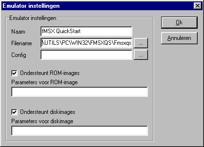

Probleem: romimages werken niet
Het blijkt dat het starten van de fMSX emulator
soms met de verkeerde parameters gebeurt, namelijk altijd met die van een diskimage, ook
bij romimages. Hierdoor denkt fMSX dat er een diskimage gestart wordt in plaats van een
romimage.
Er zijn twee mogelijke oplossingen:
- Er wordt een fMSX voor romimages aangemaakt en een
fMSX voor diskimages:
- Ga naar 'Instellingen'.
- Klik op de knop 'Toevoegen'.
- Typ bij 'naam' de tekst 'fMSX (romimage)'
- Typ bij 'filename' de tekst
'\emulator\fmsx\fmsx-dos.exe' of open deze file via de knop '...' achter het veld (dit
voorkomt tikfouten).
- Typ bij 'parameters voor diskimage'
de tekst '-video '.
- Klik op de knop 'Ok'
- Selecteer de zojuist gemaakte emulator in het
rijtje emulators en klik op de knop 'Zet' achter 'standaardemulator voor romimages'.
- Klik op de knop 'Toevoegen'.
- Typ bij 'naam' de tekst 'fMSX (diskimage)'
- Typ bij 'filename' de tekst
'\emulator\fmsx\fmsx-dos.exe' of open deze file via de knop '...' achter het veld (dit
voorkomt tikfouten).
- Typ bij 'parameters voor diskimage'
de tekst '-video -diska '.
- Klik op de knop 'Ok'
U heeft nu twee fMSX'en zodat u zowel rom- als
diskimages kunt gebruiken. U kunt nu eventueel de emulator 'fMSX (dos)' in het rijtje
wissen. Maak dan wel een andere emulator standaard, met behulp van de 'Zet' knoppen.
Mede dank aan L. Teunissen voor het idee van deze
mogelijkheid.
- fMSX wordt gestart via fMSX QuickStart, waardoor de
parameter wel goed worden doorgegeven:
- Ga naar 'Instellingen'.
- Klik bij 'emulator opties' op de knop 'Toevoegen'.
- Typ in het veld 'naam' de tekst 'fMSX QuickStart'.
- Typ in het veld 'Filename' de tekst
'\utils\pc\win32\fmsxqs\fmsxqs.exe' of open deze file via de knop '...' achter het veld
(dit voorkomt tikfouten).
- Klik op de knop 'Ok' om deze nieuwe 'emulator' toe
te voegen.
- Klik op de zojuist toegevoegde emulator in het
rijtje emulators.
- Klik op de knop 'Zet' achter 'standaard emulator
voor romimages'.
Wordt vanaf nu een romimage gestart, dan gebeurt
dit via het programma fMSX QuickStart, dat wel de juiste parameters doorgeeft. Wanneer
fMSX QuickStart voor het eerst gestart wordt dan wordt eerst om de locatie van fMSX
gevraagt. Deze is te vinden in de directory 'Emulator\fmsx' op de cdrom. Met fMSX
QuickStart kunt u fMSX geheel instellen naar eigen wens.
Noot: Met deze oplossing kunt u
fMSX zowel voor disk- als romimages gebruiken. Minpuntje is dat fMSX QuickStart telkens
vraagt of de gekozen file een disk- of romimage is. Hiervoor is een nieuwe
versie beschikbaar op deze site. Zet deze file op uw harddisk en verander het veld
filename zodat de fmsxqs.exe op uw harddisk gebruikt wordt.

|